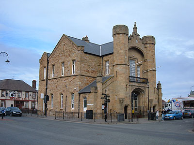

With its wealthy past, North Wales Attractions has become one of the main tourist places to go!.
With Chesire located to the east, Denbighshire to the West and Wrexham to the south, Flint has become the talk of the town!
Here is some exciting information that will persuade you to come and visit!
